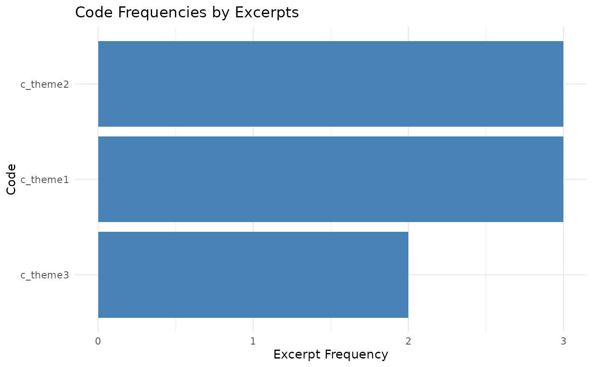
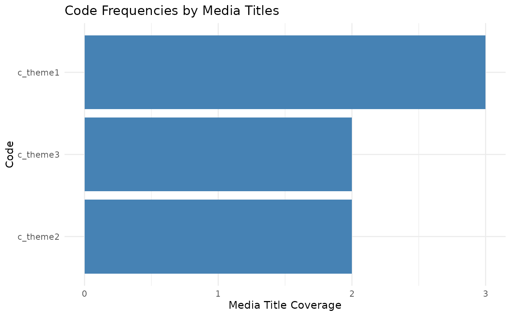
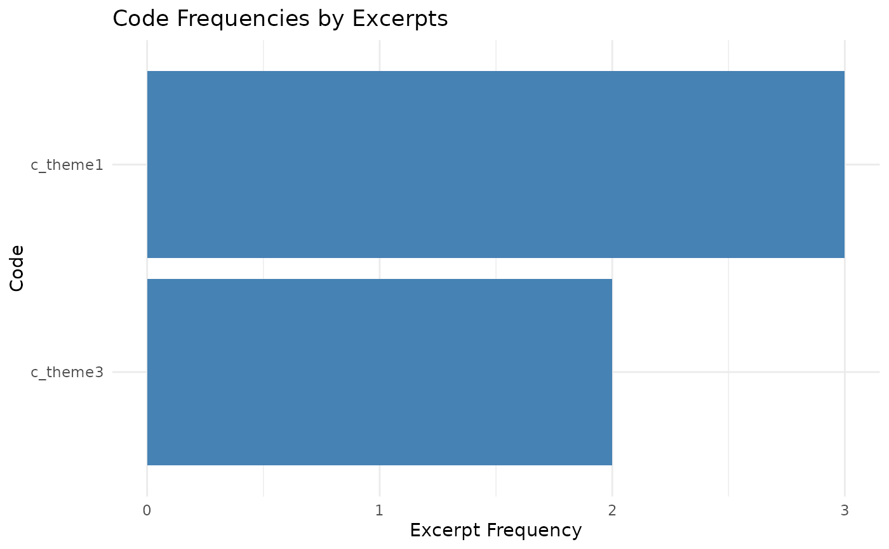

This function takes the output of count_codes() and produces a bar plot of
code frequencies using ggplot2. It supports excluding specific codes,
filtering by absolute count, or filtering by proportion of the maximum count.
The user can choose whether to plot the total excerpt frequency (count) or
the number of distinct media titles containing each code (n_media_titles).
Usage
plot_counts(
code_counts,
exclude_codes = NULL,
min_count = NULL,
min_prop = NULL,
metric = c("count", "n_media_titles"),
fill_color = "steelblue"
)Arguments
- code_counts
A tibble or data frame output from
count_codes(). Must contain at least the columnscode,count, andn_media_titles.- exclude_codes
A character vector of code names to exclude from the plot. Defaults to
NULL(no exclusions).- min_count
An integer specifying the minimum absolute count for a code to be included. Defaults to
NULL.- min_prop
A numeric value between 0 and 1 specifying the minimum proportion (relative to the maximum of the chosen metric) required for a code to be included. Defaults to
NULL.- metric
Which metric to plot. One of
"count"(excerpt frequency) or"n_media_titles"(media title coverage). Defaults to"count".- fill_color
A character string giving the fill color for the bars. Defaults to
"steelblue".
Details
Codes can be filtered either by absolute count (
min_count) or by proportion of the maximum (min_prop). If both are supplied, both filters are applied.Codes listed in
exclude_codesare removed prior to filtering.The
metricargument controls whether the y-axis shows excerpt frequency or number of unique media titles containing the code.
Examples
# Example data
df <- data.frame(
media_title = c("Doc1", "Doc1", "Doc2", "Doc2", "Doc3"),
c_theme1 = c(TRUE, FALSE, TRUE, FALSE, TRUE),
c_theme2 = c(FALSE, TRUE, TRUE, TRUE, FALSE),
c_theme3 = c(FALSE, FALSE, FALSE, TRUE, TRUE)
)
code_counts <- count_codes(df)
# Plot excerpt frequencies
plot_counts(code_counts)

# Plot by media-title coverage
plot_counts(code_counts, metric = "n_media_titles")

# Exclude one code
plot_counts(code_counts, exclude_codes = "c_theme2")

# Filter by absolute count
plot_counts(code_counts, min_count = 2)
 # Filter by proportion (keep codes at least 50% of max)
plot_counts(code_counts, min_prop = 0.5)
# Filter by proportion (keep codes at least 50% of max)
plot_counts(code_counts, min_prop = 0.5)